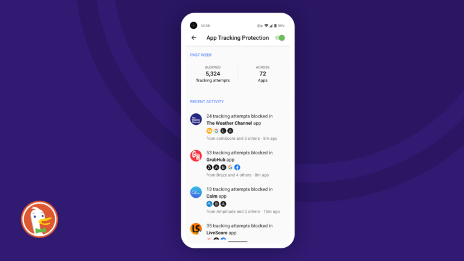

DuckDuckGo Releases New Tool To Prevent Apps From Tracking Android Users
DuckDuckGo’s new tool aims to prevent apps from tracking Android users, first reported by Wired. The tool, called App Tracking Protection, hopes to offer more protection from third-party trackers than Apple’s App Tracking Transparency feature, which gives users the choice to opt-out of data tracking within apps.
Section 1: DuckDuckGo's new tool?
Part of App Tracking Protection’s goal is to prevent data tracking from non-app-related apps that have permission to collect user data. For example, when you sign up for a new credit card or download an app for the first time, the app often tracks information such as your login history, real-time location, and data sent to its servers. The App Tracking Protection tool provides users with the ability to choose which third-party tracking apps they want to allow and which they do not want to allow.
You want to opt-out of non-app tracking, you can do so by going to Settings -> Privacy -> Application Manager -> Manage permission.

What is App Tracking Protection?
App Tracking Protection is a Chrome browser extension that blocks third-party trackers in all apps on your phone, all the time. The browser extension relies on
several other add-ons, most notably Ghostery, which I discuss in detail here.
Ghostery blocks trackers on websites, meaning they can no longer track you without using a plugin. App Tracking Protection blocks them on mobile apps, which rely on
several different types of third-party tracking.
This latest iteration is the first to pass Google’s “app safe” criteria,” which is aimed at creating a simpler way for developers to integrate app analytics into
their products.
The Google Play review process” which is designed to prevent developers from using third-party trackers within their apps.

How does the tool work?
DuckDuckGo says that the tool uses machine learning to identify trackers. After the tool has been trained with information about how an app works, it will let you
know if your browser is being tracked. To make sure the tool works on your Android device, you can have DuckDuckGo download a test version of it on your phone.
DuckDuckGo claims that App Tracking Protection is a good way to protect yourself against malvertising and other trackers.
We all know how dangerous third-party trackers can be, especially on our mobile devices. They’re often packed with ads, and if we consent to them running in the
background, they can easily track us across the web.
Why did DuckDuckGo create this tool?
DuckDuckGo’s founder and CEO Gabriel Weinberg told Wired that he found out how easily trackers such as Google Analytics are able to harvest information from third-party Android apps when he noticed an advertisement for his company in an analytics product. DuckDuckGo’s goal is to keep users out of the ads and to provide a search engine that’s not tracking them.
As Wired notes, this isn’t the first time that a privacy-focused search engine has created a tool that stops third-party trackers. DuckDuckGo’s competitor, Disconnect, has a similar tool. But what makes DuckDuckGo’s app tracking protection unique is that it uses user-written rules to detect a third-party app that is tracking users. After that, the tool shows users a prompt to opt out of tracking before they open the app.
The future of the internet and privacy
The move, which follows a push to add more privacy protections to Chrome and Firefox, suggests that consumers are looking for stronger protections from third-party companies, many of which have been caught collecting user data without permission. “With the advent of Android phones, iPhone tracking has become a much bigger issue and there's a high demand for software that protects users against it,” says DuckDuckGo founder Gabriel Weinberg. “We've found that as more people have adopted Android phones, there's also a huge demand for services that allow them to track as little as possible.
[ Conclusion: DuckDuckGo’s new tool is a great addition to Android’s privacy arsenal, making it easier than ever for users to block unwanted apps and receive a more accurate search result when they’re on a device with third-party tracking blockers enabled. ]